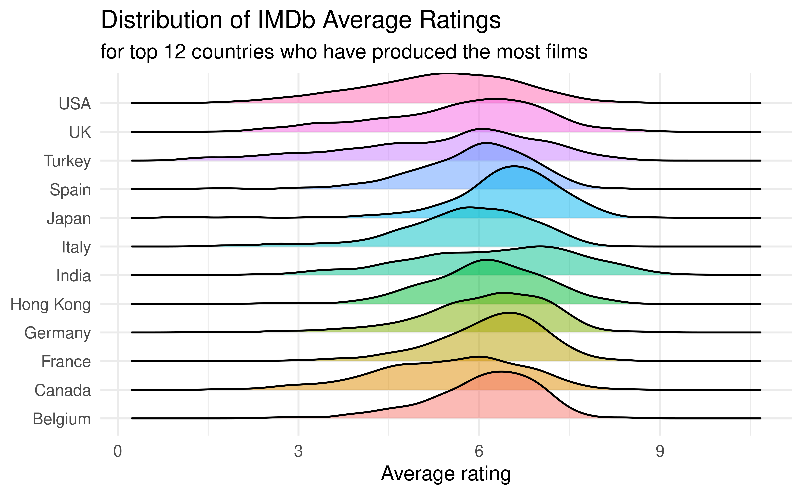
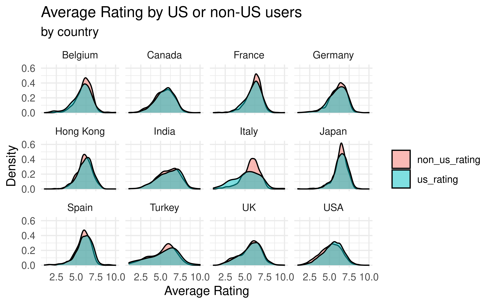
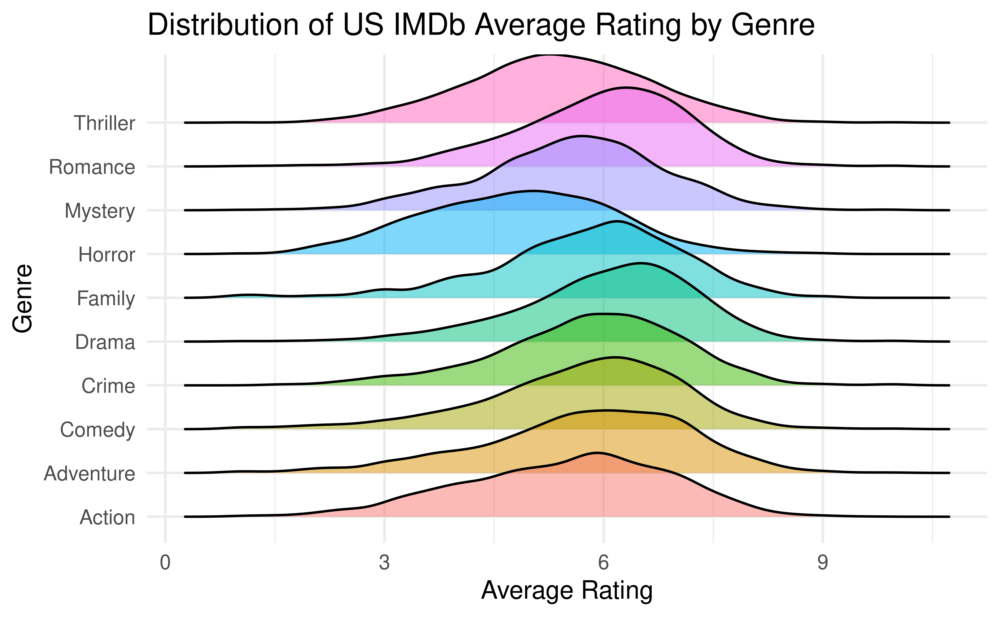
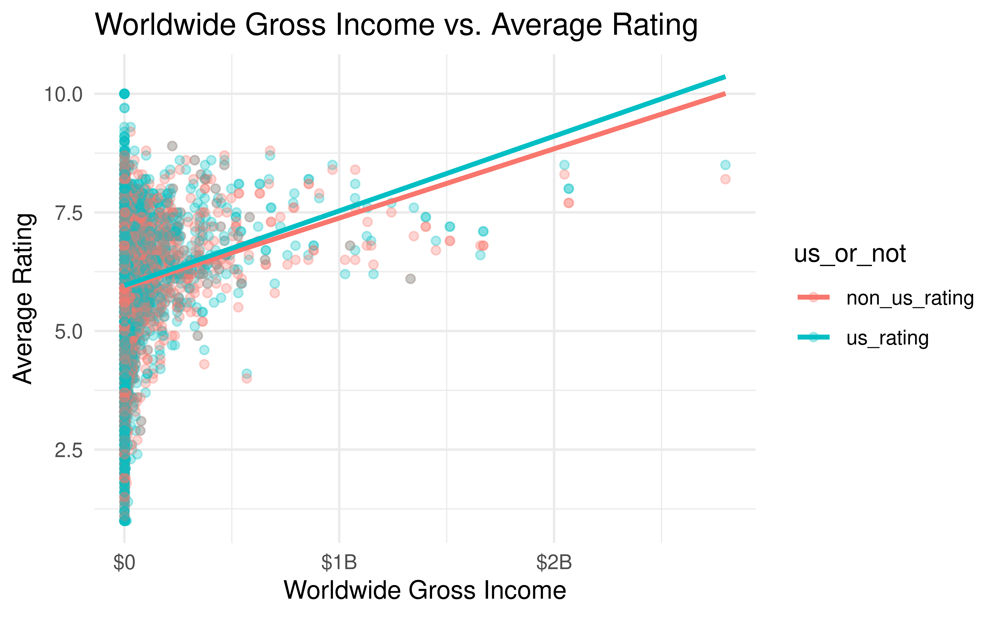

| Country | Mean Rating | Median Rating |
|---|---|---|
| Japan | 6.440102 | 6.5 |
| India | 6.255296 | 6.4 |
| France | 6.173746 | 6.3 |
| Germany | 6.088117 | 6.3 |
| Belgium | 6.069436 | 6.2 |
| Hong Kong | 6.113081 | 6.1 |
| Spain | 5.901798 | 6.0 |
| Italy | 5.773190 | 5.9 |
| UK | 5.689785 | 5.9 |
| Turkey | 5.434906 | 5.8 |
| Canada | 5.494717 | 5.6 |
| USA | 5.329991 | 5.4 |
## Picking joint bandwidth of 0.255

<<<<<<< HEAD
## Picking joint bandwidth of 0.243
## # A tibble: 6 × 5
## term estimate std.error statistic p.value
## <chr> <dbl> <dbl> <dbl> <dbl>
## 1 (Intercept) 5.49 0.0255 215. 0
## 2 genreAnimation 0.786 0.0641 12.3 1.85e-34
## 3 genreComedy 0.223 0.0312 7.14 9.70e-13
## 4 genreCrime 0.328 0.0398 8.24 1.90e-16
## 5 genreDrama 0.569 0.0292 19.5 4.69e-84
## 6 genreHorror -0.665 0.0391 -17.0 2.20e-64R squared: 7.5562686%

## # A tibble: 13 × 5
## term estimate std.error statistic p.value
## <chr> <dbl> <dbl> <dbl> <dbl>
## 1 (Intercept) 4.69 0.0987 47.5 0
## 2 log(worlwide_gross_income) 0.0835 0.00470 17.7 7.75e-69
## 3 countryCanada 0.200 0.0984 2.03 4.25e- 2
## 4 countryFrance 0.241 0.0852 2.83 4.68e- 3
## 5 countryGermany 0.353 0.0952 3.71 2.10e- 4
## 6 countryHong Kong 0.126 0.126 1.00 3.15e- 1
## 7 countryIndia 0.442 0.0878 5.03 5.00e- 7
## 8 countryItaly -0.857 0.102 -8.39 5.79e-17
## 9 countryJapan 0.590 0.0997 5.92 3.30e- 9
## 10 countrySpain 0.365 0.104 3.49 4.82e- 4
## 11 countryTurkey -0.557 0.107 -5.22 1.89e- 7
## 12 countryUK 0.411 0.0870 4.72 2.44e- 6
## 13 countryUSA 0.134 0.0791 1.69 9.04e- 2Income and Country: 10.8215135%
Income: 4.8082374%
6cee77440efc81f27a60490ab174a7ccb15eaa33